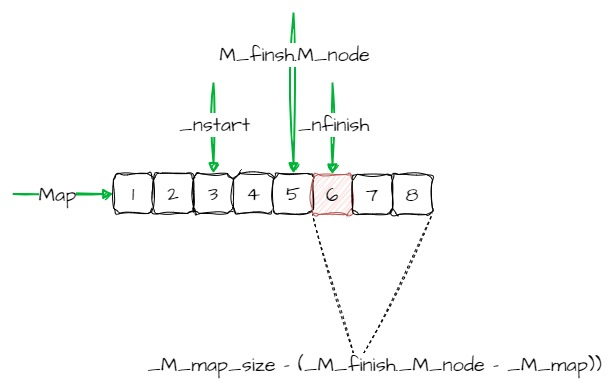
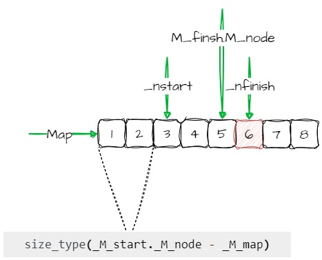
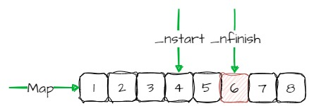
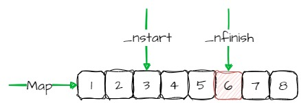
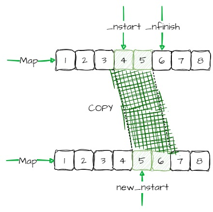

Allocation of _M_map and nodes¶
_M_reserve_map_at_back¶
void _M_reserve_map_at_back (size_type __nodes_to_add = 1) {
if (__nodes_to_add + 1 > _M_map_size - (_M_finish._M_node - _M_map))
_M_reallocate_map(__nodes_to_add, false);
}
Please refer to _M_reallocate_map
首先需要确保map的空间，
__nodes_to_add + 1 > _M_map_size - (_M_finish._M_node - _M_map)
_M_map_size - (_M_finish._M_node - _M_map)是map尾部剩余的空间
_M_reserve_map_at_front¶
void _M_reserve_map_at_front (size_type __nodes_to_add = 1) {
if (__nodes_to_add > size_type(_M_start._M_node - _M_map))
_M_reallocate_map(__nodes_to_add, true);
}
Please refer to _M_reallocate_map
_M_reallocate_map¶
template <class _Tp, class _Alloc>
void deque<_Tp,_Alloc>::_M_reallocate_map(size_type __nodes_to_add,
bool __add_at_front)
{
size_type __old_num_nodes = _M_finish._M_node - _M_start._M_node + 1;
size_type __new_num_nodes = __old_num_nodes + __nodes_to_add;
_Map_pointer __new_nstart;
if (_M_map_size > 2 * __new_num_nodes) {
__new_nstart = _M_map + (_M_map_size - __new_num_nodes) / 2
+ (__add_at_front ? __nodes_to_add : 0);
if (__new_nstart < _M_start._M_node)
copy(_M_start._M_node, _M_finish._M_node + 1, __new_nstart);
else
copy_backward(_M_start._M_node, _M_finish._M_node + 1,
__new_nstart + __old_num_nodes);
}
else {
size_type __new_map_size =
_M_map_size + max(_M_map_size, __nodes_to_add) + 2;
_Map_pointer __new_map = _M_allocate_map(__new_map_size);
__new_nstart = __new_map + (__new_map_size - __new_num_nodes) / 2
+ (__add_at_front ? __nodes_to_add : 0);
copy(_M_start._M_node, _M_finish._M_node + 1, __new_nstart);
_M_deallocate_map(_M_map, _M_map_size);
_M_map = __new_map;
_M_map_size = __new_map_size;
}
_M_start._M_set_node(__new_nstart);
_M_finish._M_set_node(__new_nstart + __old_num_nodes - 1);
}
Example¶
deque<int, 250>
此时，
_num_elements = 250
__deque_buf_size(sizeof(_Tp)) = 128
__num_nodes = 250/128 + 1 = 2
__nstart = _M_map + (8-2)/2 = _M_map + 3
__nfinish = __nstart + 2 = _M_map + 5
__old_num_nodes = _M_finish._M_node - _M_start._M_node + 1 = 2
__new_num_nodes = __old_num_nodes + __nodes_to_add = 2 + __nodes_to_add
这里假设需要添加的node的值为1，则__new_num_nodes = 2 + 1 = 3
_M_map_size > 2 * __new_num_nodes¶
_M_reserve_map_at_back
__new_nstart = _M_map + (_M_map_size - __new_num_nodes) / 2 + 0 __new_nstart = _M_map + (8-3)/2 = _M_map + 2
_M_reserve_map_at_front
__new_nstart = _M_map + (8-3)/2 + 1 = _M_map + 3
此时的nstart并没有改变
跟据new_start相对于原生的start的位置，来进行调用copy进行移动node节点
__new_nstart < _M_start._M_node¶
new_nstart在_M_start._M_node的**前面**，即计算出来的新的起始地址需要**向前移动**
此时调用的是算法copy
new_nstart在_M_start._M_node的**后面**，即计算出来的新的起始地址需要**向后移动**
此时调用的是算法copy_backward
Note
在deque<int, 250>的例子中，new_start == M_start._M_node
_M_map_size <= 2 * __new_num_nodes¶
重新计算map的size
重新申请map
将原来的map的内容copy到新的map中，并释放掉原来的map空间